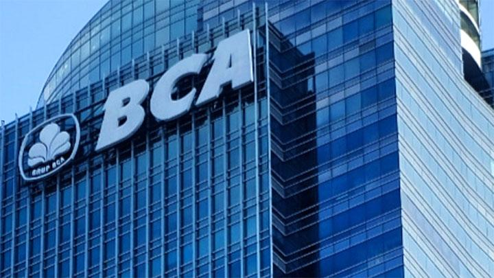

STOCK SPLIT BANK CENTRAL ASIA

-
PT Bank Central Asia Tbk. atau BCA resmi melakukan stock split atau pemecahan saham setelah memperoleh persetujuan dari Bursa Efek Indonesia. Seusai stock split, saham BBCA akan resmi diperdagangkan dengan harga baru, Rabu, 13
Oktober 2021. Pada Rabu pagi, harga saham BBCA berkisar Rp 7.320 per lembar atau setara dengan Rp 36.600. Adapun nilai nominal per saham BBCA sebelum stock split adalah Rp 62,5, sedangkan nilai nominal per saham BBCA setelah
stock split menjadi Rp 12,5. “Keputusan Perseroan untuk melakukan pemecahan harga saham tersebut didasarkan pada perkembangan pasar modal saat ini,” ujar President Director BCA Jahja Setiaatmadja dalam keterangannya, Rabu, 13
Oktober.
-
BCA memperhatikan tingginya minat investor retail, termasuk para investor muda untuk berinvestasi di pasar modal. Perseroan berharap aksi korporasi ini dapat memberikan kontribusi terhadap perkembangan pasar modal dalam negeri.
Aksi korporasi stock split ini sebelumnya telah disetujui dengan rasio 1:5 atau satu saham dipecah menjadi lima saham baru. Adapun saham dengan nilai nominal baru hasil stock split akan didistribusikan oleh PT Kustodian Sentral
Efek Indonesia kepada pemegang saham pada 15 Oktober 2021.“Dengan harga baru yang mulai diperdagangkan hari ini, perseroan berharap harga saham BCA menjadi relatif terjangkau dan mendapat sambutan positif dari investor, terutama
investor pemula yang saat ini aktif berinvestasi di pasar modal,” ujar Jahja.